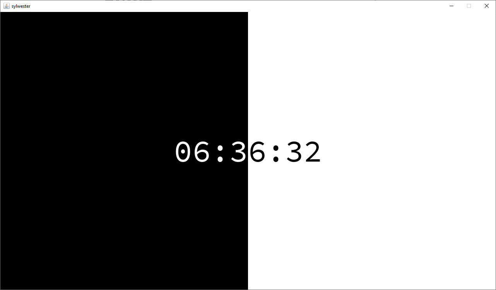

Odliczanie do nowego roku 2021 Java Processing PL
Program pozwalający na wyświetlenie odliczania do nowego roku (działa w każdym roku)
Uwaga! W folderze "data" znajduje się plik "config.txt" za pomocą którego można zmienić wiadomość wyświetlającą się po godzinie 00:00
Pobierz
Pobieranie aplikacji (wymaga programu Java)
